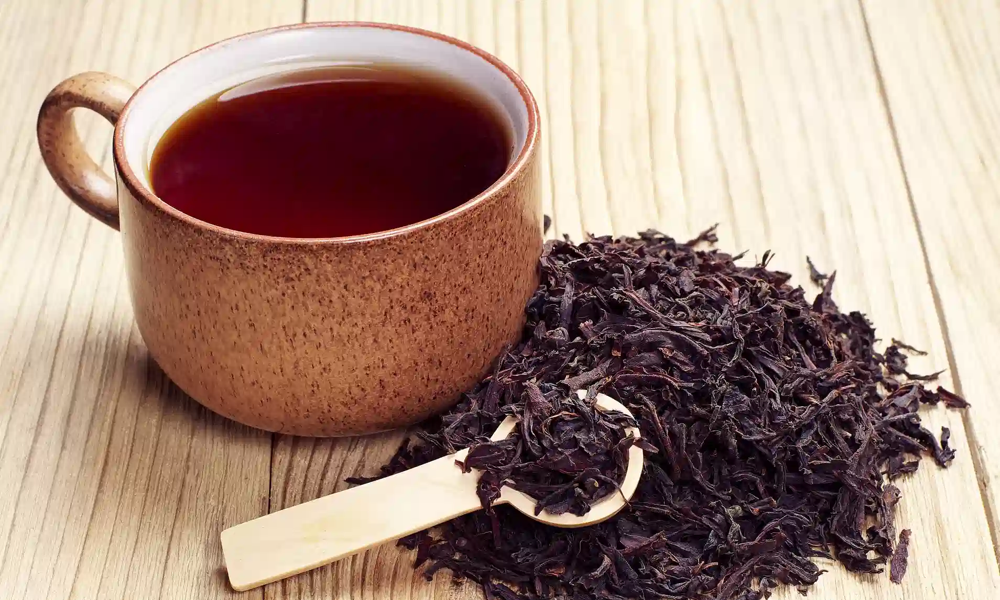
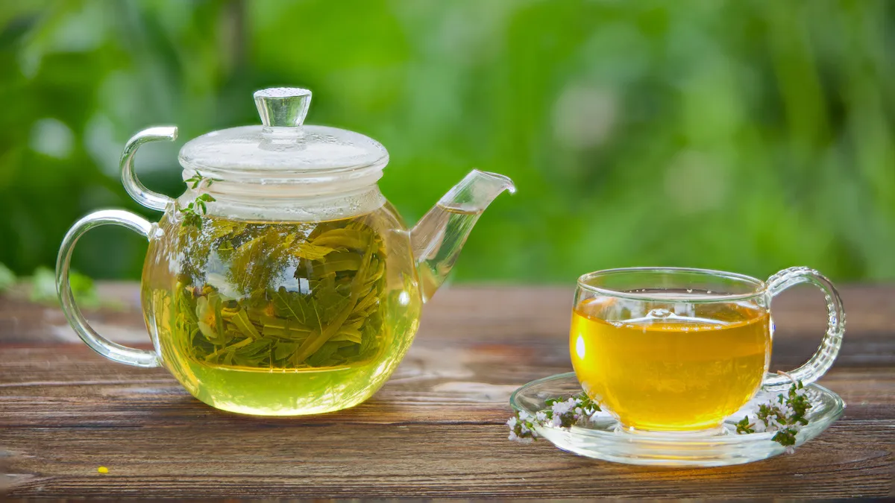
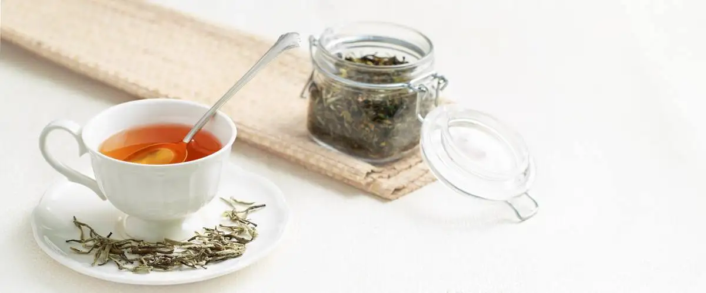

Black Tea
The Black Tea is considered to be more of a Western type culture and most of the people refer to the black tea as an afternoon tea. Black Tea are more popular around the globe where in most of the countries the breakfast is made out of black tea leaves. The black tea is originated from China making it the foundation of the tea culture here today.
Green Tea
The Green Tea originates from plants of the same species and making it one of the most popular tea around the globe. Sri Lanka, China, India and Japan are the countries who are specialized in producing the black tea. The country of origin of the green tea is China and the state where they can be found is Yunnan. It is estimated that 380+ varieties of tea types are found in the Yunnan province.
White Tea
The White Tea is the type of tea that is minimally produced. These teas are picked up before the leaves open fully. This is originated from China in the year between (600 and 1300) and was a form of a tribute to the emperors during the era. The white teas are the rarest form of tea varieties and also the finest tea in China.
| Types of Tea | Process | Benefits | Costs |
|---|---|---|---|
| Black Tea | The tea leaves are hand-plucked by a group of female specialists. They ensure that they pick large quantities of two leaves along with a bud are picked. The leaves are then rolled, withered and fermented and also sifted and dried. After this process the leaves are graded differently according to their size, and one of the largest leaves named as Orange Pekoe. |
|
Unknown |
| Green Tea | The leaves are firstly unfermented to maintain some of its characteristics and later on picked, withered and heated. But before shifting and drying the leaves are rolled to maintain the quality of taste. |
|
Unknown |
| White Tea | For the white tea, only the buds are picked at dawn making it a special kind than the rest of the tea’s. the buds are not fermented and are specially hand-rolled. |
|
Unknown |
| Different types of tea data | |||